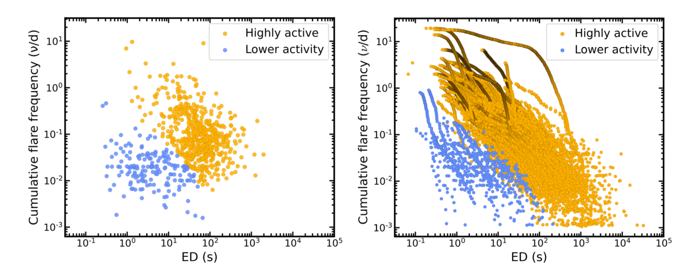

Welcome TESS followers to our latest news bulletin!
This week, we are looking at three recent papers from the archive. Enjoy!
First, we highlight the discovery of a vast stellar complex surrounding the Pleiades star cluster, demonstrating how TESS observations can reveal hidden structures in well-known objects. The study combines stellar rotation measurements from TESS with precise position and motion data from Gaia to trace the dissolution of star clusters over cosmic time. Understanding how star clusters disperse is crucial for stellar astrophysics, as it reveals the birth environments of stars and helps trace the formation history of our galaxy's stellar populations.
Next, we outline a paper reporting the validation of the ~30 Myr-old planet TOI-6448 b. Such planets offer crucial insights into planetary formation and evolution processes that eventually shape the more mature planetary systems. Young planets, particularly those less than 50 million years old, provide a unique window into understanding how planetary radii change over time. These systems are essential for testing competing theories arguing whether large planets form as 'gas dwarfs' that lose their extended atmospheres or maintain consistent sizes as 'water worlds' with denser compositions.
The third paper reports the detection, characterization, and analysis of stellar flares produced by M dwarfs observed by TESS. Stellar flares are particularly important for understanding planetary atmospheres around M dwarfs, as planets orbiting these small, cool stars are primary targets for atmospheric characterization with the JWST. The frequency and energy distribution of stellar flares directly impact the interpretation of exoplanet transmission spectroscopy observations, making comprehensive flare surveys essential for distinguishing genuine atmospheric signals from stellar contamination.
Lost Sisters Found: TESS and Gaia Reveal a Dissolving Pleiades Complex (Boyle et al. 2025) :
Boyle et al. (2025) present a detailed analysis of the Pleiades cluster, based on a novel Bayesian framework that incorporates stellar rotation periods as age indicators, allowing them to identify young stars even when they are widely separated on the sky, and intermixed with older field stars. Applying this method to the Pleiades region, the authors discovered what they term the ``Greater Pleiades Complex’’ – a sprawling structure containing over 3,000 stars distributed across nearly 600 parsecs. This extended complex includes the traditional Pleiades cluster as well as several previously identified groups including seven known groups (e.g., UPK 303, HSC 1964, UPK 545, and potentially the AB Doradus moving group) and two new diffuse groups. The study of Boyle et al. (2025) reveals that these dispersed stellar populations share remarkable similarities with the core Pleiades cluster. The authors note that all groups exhibit consistent ages, similar chemical compositions across multiple elements, and coherent space velocities. Orbital back-integration calculations show that three of the main subgroups approached within roughly 30-50 parsecs of the Pleiades core ~70-80 million years ago, providing additional evidence for their common origin. The research demonstrates that UPK 303 shows characteristics of a tidal tail, with stars at greater distances from the Pleiades showing progressively older dynamical ages, suggesting they were stripped from the cluster at earlier times. The authors argue that the presented Bayesian selection method proved to be significantly more effective than traditional spatial and kinematic clustering approaches, recovering structures that would otherwise remain hidden among field star contamination. Boyle et al. (2025) note that the methodology developed here offers a scalable approach for identifying dissolving stellar associations throughout the galaxy, particularly effective for populations aged 80-200 million years where rotation remains a reliable age diagnostic. Additionally, their Monte Carlo simulations show that field star contamination accounts for only about 6 percent of their final sample. The study also addressed potential binary star contamination through multiple independent criteria, finding that the observed extended structure remains intact even after removing likely binary systems. Capitalizing on TESS data, the authors demonstrated that the Pleiades is the bound core of a much larger coeval structure that likely originated from the same giant molecular cloud, fundamentally expanding our understanding of this cornerstone stellar population.Their findings suggest that many apparently distinct young stellar groups may actually be remnants of common formation events, highlighting the complex and extended nature of star cluster dissolution in the galactic disk.
TESS Investigation -- Demographics of Young Exoplanets (TI-DYE) IV: a Jovian radius planet orbiting a 34 Myr Sun-like star in the Vela association (Barber et al. 2025) :
Barber et al. (2025) present a comprehensive validation of TOI-6448 b – a large planet with a radius of 8.8 Earth radii orbiting a young Sun-like star every 14.8 days. TESS observed the target in Sectors 33, 34, 61, and 87, the latter in short cadence, and enabled the detection of periodic transit-like signals indicating a planet candidate. To complement the TESS observations, the authors obtained ground-based photometric and spectroscopic observations from multiple observatories. Their analysis shows that the host star is indeed a member of the Vela association and has an age of ~34 million years, the latter determined through multiple independent methods including stellar rotation periods, color-magnitude diagrams, and stellar variability analysis. The ground-based spectroscopic observations revealed a lithium equivalent width of 170 milliangstroms, consistent with the derived young age and confirming the star's pre-main-sequence status. Barber et al. (2025) confirmed the star's membership in the Vela Population IV through kinematic analysis, identifying 393 co-moving stellar companions within specific velocity and distance criteria. The stellar mass was determined to be 1.03 solar masses with an effective temperature of 5910 K, while the planet's equilibrium temperature is estimated at 745 K assuming zero albedo. The planet's radius places it in the gap between Neptune and Jupiter sizes, a region sparsely populated among older planetary systems discovered by Kepler. The authors note that the relatively low orbital eccentricity of TOI-6448 b and the host star's rapid rotation period of 2.4 days both align with expectations for young planetary systems. Additionally, Barber et al. (2025) argue that TOI-6448 b is consistent with the apparent excess of 5-11 Earth-radius planets around young stars, which cannot be explained solely by reduced detection sensitivity. This TESS-enabled discovery adds to a growing population of puffy planets around young stars, with TOI-6448 b representing the eleventh such system, altogether harboring sixteen transiting planets younger than 50 million years. Future observations with space-based telescopes could potentially measure the planet's mass through transmission spectroscopy, providing additional constraints on formation models and atmospheric composition.
Stellar Flares in the TESS Light Curves of Planet-hosting M dwarfs (Capistrant & Dittmann 2025) :
Capistrant & Dittmann (2025) conducted a large-scale analysis of TESS photometric data, detecting over 50,000 flares across nearly 500 M dwarf stars. The authors investigate both a volume-limited sample of 538 M dwarfs within 15 parsecs and a collection of planet-hosting M dwarfs scheduled for JWST transmission spectroscopy observations in Cycles 1-3. Flares were detected in 276 of the 538 nearby M dwarfs, representing approximately 51% of the local population. For the JWST target sample of 41 M dwarfs, Capistrant & Dittmann (2025) identified a total of 185 flaring events in 14 systems. The authors computed flare frequency distributions and fitted power laws to analyze activity patterns across different stellar populations. They found that lower activity M dwarfs exhibited a combined power law exponent of alpha = 1.99 ± 0.07, while higher-activity targets showed average values of alpha = 1.94 ± 0.58 for those with 10-100 detected flares and alpha = 2.03 ± 0.43 for systems with more than 100 flares. These results suggest minimal evolution in power law behavior as M dwarfs transition between high and low activity states. Utilizing Gaussian Mixture Model clustering, the authors categorized stars into relatively higher and lower activity groups based on their flaring characteristics. Their injection-recovery tests revealed detection limits of approximately 2 minutes for flare duration and signal-to-noise ratios of ~4-5 based on amplitude relative to light curve scatter. Additionally, Capistrant & Dittmann (2025) found that most JWST Cycles 1 and 2 targets fell within the lower activity category, with notable exceptions including TRAPPIST-1 and TOI-2445, while Cycle 3 targets exhibited higher activity levels (with the exception of GJ 1151). The authors note that the estimated power law exponents align well with previous literature values for M-type stars, supporting the self-organized criticality model where alpha ≈ 2 represents a critical threshold for flare energy distributions. Thanks to TESS, Capistrant & Dittmann (2025) were able to provide crucial context for interpreting JWST transmission spectra of planets orbiting M-dwarfs, as stellar flares and associated activity can significantly contaminate atmospheric retrievals, potentially leading to inconclusive or misinterpreted results regarding planetary atmospheric composition.

Fig. 1: Taken from Boyle et al. (2025). Sky distribution of the Greater Pleiades Association identified by the authors, as visible from Chapel Hill, NC on 2024-12-21.

Fig. 2: Taken from Barber et al. (2025). Left panel: phase-folded TESS lightcurve of the young planet TOI-6448b, along with the corresponding best-fit model. Right panel: a section of the TESS lightcurve highlighting the stellar variability in Sector 87. The planet transits are indicated by the orange vertical bands.

Fig. 3: Taken from Capistrant & Dittmann (2025). Cumulative flare frequency as a function of the mean equivalent duration (ED) for a sample of M-dwarfs observed by TESS. Left panel: each point represents one star; right panel: full flare distribution for each star.